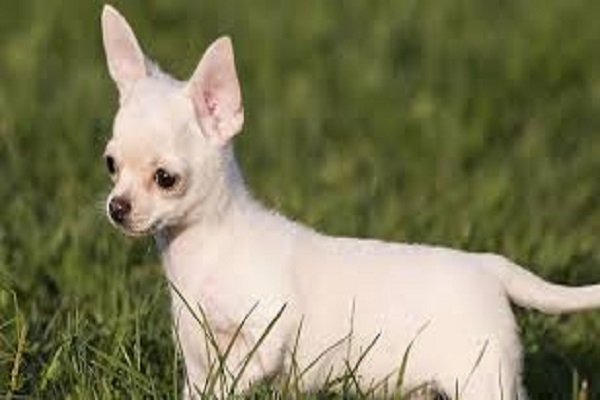

Goldens Tiernos

El golden retriever es de temperamento apacible, inteligente y cariñoso. Los golden retrievers son juguetones, aunque dóciles con los niños, y tienden a llevarse bien con otras mascotas y con los extraños.
Pug Adorable
Entre las características de los perros pug destaca su hocico, muy corto y achatado. Sobre él, aparecen unas arrugas muy peculiares que les dan una expresión preocupada. Se debe también a sus ojos, que son muy grandes, oscuros y dulces; así como a sus orejas, pequeñas y caídas.
Perrito y gatito
A pesar de ser muy diferentes, ya que los perros son totalmente dependientes mientras que los gatos no, existe aquello de que los polos opuestos se atraen.
Chihuahua Cute
El chihuahua tiende a crear un estrecho vínculo con una o dos personas, con quienes será curioso, vivaracho e inteligente, además de constantemente afectuoso. Sin embargo, sin una socialización adecuada, no es una raza que acepte bien a los desconocidos y puede parecer nervioso, ladrador y ruidoso.
Arrocito Feliz
El arroz dulce de grano corto es la variedad “más pegajosa” de arroz que se consume en Corea. Es ampliamente utilizado en la elaboración de tortas de arroz y postres. El índice glucémico de este arroz es muy alto